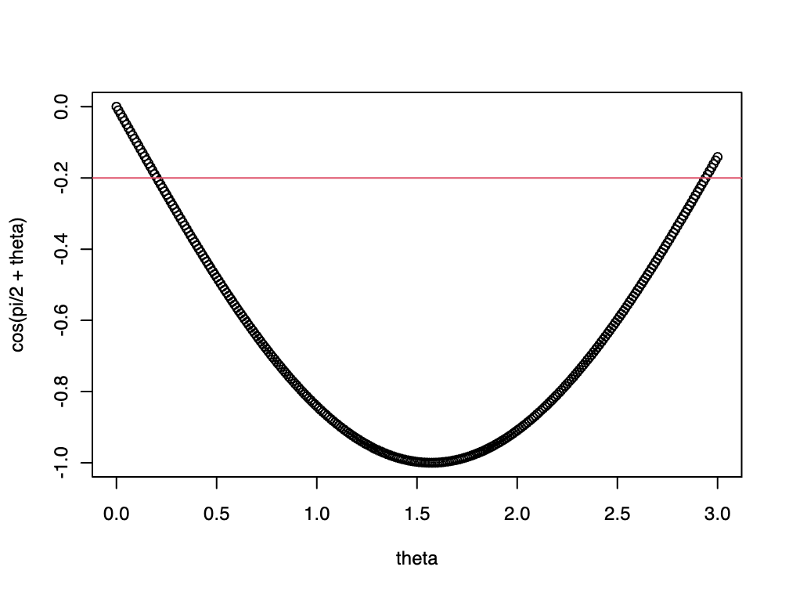

theta = 2.9401wk-2: R은 좋은 계산기, 변수 이름 선언, 벡터의 선언, 함수의 선언
1. R은 좋은 계산기이다.
2025수능-6. \(\cos \left(\frac{\pi}{2} + \theta \right) = -\frac{1}{5}\) 일 때, \(\frac{\sin\theta}{1 - \cos^2\theta}\) 의 값은? [3점]
- \(-5\)
- \(-\sqrt{5}\)
- \(0\)
- \(\sqrt{5}\)
- \(5\)
(풀이1)
cos(pi/2+theta) # 이 값이 -0.2 정도가 되어야 할텐데?[1] -0.20023반복계산을 하다보니까 \(\theta \approx 2.94\) 인듯
sin(theta)/(1-cos(theta)^2)[1] 4.994257(풀이2)
acos(-1/5) - pi/2[1] 0.2013579sin(0.2013579)/(1-cos(0.2013579)^2)[1] 5.000001input = -0.2
theta = acos(input) - pi/2
output = sin(theta) / (1-cos(theta)^2)
output[1] 5이걸 하나로 묶으면..
solve <- function(input){
theta = acos(input) - pi/2
output = sin(theta)/(1-cos(theta)^2)
return(output)
}solve(-0.2)[1] 5(풀이3) – 미완성의 풀이
# theta = c(0.0, 0.1, 0.2, 0,3, 0.4, 0.5, 0.6, 0.7, 0.8, 0.9,
# 1.0, 1.1, 1.2, 1,3, 1.4, 1.5, 1.6, 1.7, 1.8, 1.9,
# 2.0, 2.1, 2.2, 2,3, 2.4, 2.5, 2.6, 2.7, 2.8, 2.9)
theta = 0:300/100
theta [1] 0.00 0.01 0.02 0.03 0.04 0.05 0.06 0.07 0.08 0.09 0.10 0.11 0.12 0.13 0.14
[16] 0.15 0.16 0.17 0.18 0.19 0.20 0.21 0.22 0.23 0.24 0.25 0.26 0.27 0.28 0.29
[31] 0.30 0.31 0.32 0.33 0.34 0.35 0.36 0.37 0.38 0.39 0.40 0.41 0.42 0.43 0.44
[46] 0.45 0.46 0.47 0.48 0.49 0.50 0.51 0.52 0.53 0.54 0.55 0.56 0.57 0.58 0.59
[61] 0.60 0.61 0.62 0.63 0.64 0.65 0.66 0.67 0.68 0.69 0.70 0.71 0.72 0.73 0.74
[76] 0.75 0.76 0.77 0.78 0.79 0.80 0.81 0.82 0.83 0.84 0.85 0.86 0.87 0.88 0.89
[91] 0.90 0.91 0.92 0.93 0.94 0.95 0.96 0.97 0.98 0.99 1.00 1.01 1.02 1.03 1.04
[106] 1.05 1.06 1.07 1.08 1.09 1.10 1.11 1.12 1.13 1.14 1.15 1.16 1.17 1.18 1.19
[121] 1.20 1.21 1.22 1.23 1.24 1.25 1.26 1.27 1.28 1.29 1.30 1.31 1.32 1.33 1.34
[136] 1.35 1.36 1.37 1.38 1.39 1.40 1.41 1.42 1.43 1.44 1.45 1.46 1.47 1.48 1.49
[151] 1.50 1.51 1.52 1.53 1.54 1.55 1.56 1.57 1.58 1.59 1.60 1.61 1.62 1.63 1.64
[166] 1.65 1.66 1.67 1.68 1.69 1.70 1.71 1.72 1.73 1.74 1.75 1.76 1.77 1.78 1.79
[181] 1.80 1.81 1.82 1.83 1.84 1.85 1.86 1.87 1.88 1.89 1.90 1.91 1.92 1.93 1.94
[196] 1.95 1.96 1.97 1.98 1.99 2.00 2.01 2.02 2.03 2.04 2.05 2.06 2.07 2.08 2.09
[211] 2.10 2.11 2.12 2.13 2.14 2.15 2.16 2.17 2.18 2.19 2.20 2.21 2.22 2.23 2.24
[226] 2.25 2.26 2.27 2.28 2.29 2.30 2.31 2.32 2.33 2.34 2.35 2.36 2.37 2.38 2.39
[241] 2.40 2.41 2.42 2.43 2.44 2.45 2.46 2.47 2.48 2.49 2.50 2.51 2.52 2.53 2.54
[256] 2.55 2.56 2.57 2.58 2.59 2.60 2.61 2.62 2.63 2.64 2.65 2.66 2.67 2.68 2.69
[271] 2.70 2.71 2.72 2.73 2.74 2.75 2.76 2.77 2.78 2.79 2.80 2.81 2.82 2.83 2.84
[286] 2.85 2.86 2.87 2.88 2.89 2.90 2.91 2.92 2.93 2.94 2.95 2.96 2.97 2.98 2.99
[301] 3.00plot(theta,cos(pi/2+theta))
abline(h=-0.2,col=2)
#
2. 변수 이름 선언
A. 변수이름에 어떠한 값을 넣는 방법
- 방법1
d = 1- 방법2
e <- 3B. 잘못된 변수명
# 예제1 – 특수문자 불가능
a! <- 3Error: Error in Unknown source: <text>:1:2: unexpected '!'
1: a!
^#
# 예제2 – 숫자로 시작하는 변수이름 불가능
2a <- 3 Error: Error in Unknown source: <text>:1:2: unexpected symbol
1: 2a
^a2 <- 3 - 이것은 가능 (숫자로 시작되면 안되는 것이지 숫자를 포함하지 말라는 의미는 아님)
#
# 예제3 – 띄어쓰기 불가능
Guebin Choi <- 33 Error: Error in Unknown source: <text>:1:8: unexpected symbol
1: Guebin Choi
^this_is_333 <- 333- 띄어쓰기 대신 언더바(_)를 활용한다.
this.is.777 <- 777 - 언더바 말고 닷(.)을 선호하는 사람도 있다.
#
# 예제4 – 언더바를 포함하는 것은 가능하지만, 언더바로 시작하는 변수명은 사용할 수 없다. `
_x <- 33Error: Error in Unknown source: <text>:1:2: unexpected symbol
1: _x
^#
# 예제5 – 사용할 수는 있지만 권장하지 않는 변수이름
pi[1] 3.141593pi<-333pi[1] 3333. 벡터의 선언
# 예제1 – 직접 입력
c(1,2,3,3,4,5,2)[1] 1 2 3 3 4 5 2# 예제2 – seq를 이용
seq(from=0,to=10,by=0.1) # 0~10 까지 0.1의 간격으로 수열만들기 [1] 0.0 0.1 0.2 0.3 0.4 0.5 0.6 0.7 0.8 0.9 1.0 1.1 1.2 1.3 1.4
[16] 1.5 1.6 1.7 1.8 1.9 2.0 2.1 2.2 2.3 2.4 2.5 2.6 2.7 2.8 2.9
[31] 3.0 3.1 3.2 3.3 3.4 3.5 3.6 3.7 3.8 3.9 4.0 4.1 4.2 4.3 4.4
[46] 4.5 4.6 4.7 4.8 4.9 5.0 5.1 5.2 5.3 5.4 5.5 5.6 5.7 5.8 5.9
[61] 6.0 6.1 6.2 6.3 6.4 6.5 6.6 6.7 6.8 6.9 7.0 7.1 7.2 7.3 7.4
[76] 7.5 7.6 7.7 7.8 7.9 8.0 8.1 8.2 8.3 8.4 8.5 8.6 8.7 8.8 8.9
[91] 9.0 9.1 9.2 9.3 9.4 9.5 9.6 9.7 9.8 9.9 10.0seq(from=0, to=1, length.out = 27) # 0~1 까지 등간격으로 총 27개의 수열만들기 [1] 0.00000000 0.03846154 0.07692308 0.11538462 0.15384615 0.19230769
[7] 0.23076923 0.26923077 0.30769231 0.34615385 0.38461538 0.42307692
[13] 0.46153846 0.50000000 0.53846154 0.57692308 0.61538462 0.65384615
[19] 0.69230769 0.73076923 0.76923077 0.80769231 0.84615385 0.88461538
[25] 0.92307692 0.96153846 1.00000000# 예제3 – : 를 이용
1:22 [1] 1 2 3 4 5 6 7 8 9 10 11 12 13 14 15 16 17 18 19 20 21 22이 방법을 살짝 응용하면 0~1까지 57개의 변수를 넣는 방법을 아래와 같이 할 수 있다.
0:56/56 [1] 0.00000000 0.01785714 0.03571429 0.05357143 0.07142857 0.08928571
[7] 0.10714286 0.12500000 0.14285714 0.16071429 0.17857143 0.19642857
[13] 0.21428571 0.23214286 0.25000000 0.26785714 0.28571429 0.30357143
[19] 0.32142857 0.33928571 0.35714286 0.37500000 0.39285714 0.41071429
[25] 0.42857143 0.44642857 0.46428571 0.48214286 0.50000000 0.51785714
[31] 0.53571429 0.55357143 0.57142857 0.58928571 0.60714286 0.62500000
[37] 0.64285714 0.66071429 0.67857143 0.69642857 0.71428571 0.73214286
[43] 0.75000000 0.76785714 0.78571429 0.80357143 0.82142857 0.83928571
[49] 0.85714286 0.87500000 0.89285714 0.91071429 0.92857143 0.94642857
[55] 0.96428571 0.98214286 1.00000000물론 아래와 같이하는것이 더 가독성이 좋다.
seq(from=0,to=1,length.out =57) [1] 0.00000000 0.01785714 0.03571429 0.05357143 0.07142857 0.08928571
[7] 0.10714286 0.12500000 0.14285714 0.16071429 0.17857143 0.19642857
[13] 0.21428571 0.23214286 0.25000000 0.26785714 0.28571429 0.30357143
[19] 0.32142857 0.33928571 0.35714286 0.37500000 0.39285714 0.41071429
[25] 0.42857143 0.44642857 0.46428571 0.48214286 0.50000000 0.51785714
[31] 0.53571429 0.55357143 0.57142857 0.58928571 0.60714286 0.62500000
[37] 0.64285714 0.66071429 0.67857143 0.69642857 0.71428571 0.73214286
[43] 0.75000000 0.76785714 0.78571429 0.80357143 0.82142857 0.83928571
[49] 0.85714286 0.87500000 0.89285714 0.91071429 0.92857143 0.94642857
[55] 0.96428571 0.98214286 1.00000000#
# 예제4 – rep 를 이용
rep(0,5)[1] 0 0 0 0 0#
4. 함수의 선언
- 함수의 기본 구조
함수이름 <- function(입력){
함수의 기능
return(출력)
}solve <- function(input){
theta = acos(input) - pi/2
output = sin(theta)/(1-cos(theta)^2)
return(output)
}solve(-1/5)[1] 5- 아래의 2개의 코드는 거의 같다.
### 1
solve <- function(input){
theta = acos(input) - pi/2
output = sin(theta)/(1-cos(theta)^2)
return(output)
}
solve(-1/5)
### 2
input = -1/5
theta = acos(input) - pi/2
output = sin(theta)/(1-cos(theta)^2)
output[1] 5- return을 생략해도 괜찮다.
solve <- function(input){
theta = acos(input) - pi/2
output = sin(theta)/(1-cos(theta)^2)
return(output)
}
solve(-1/5)[1] 5solve <- function(input){
theta = acos(input) - pi/2
output = sin(theta)/(1-cos(theta)^2)
output
}
solve(-1/5)[1] 5solve <- function(input){
theta = acos(input) - pi/2
sin(theta)/(1-cos(theta)^2)
}
solve(-1/5)[1] 5